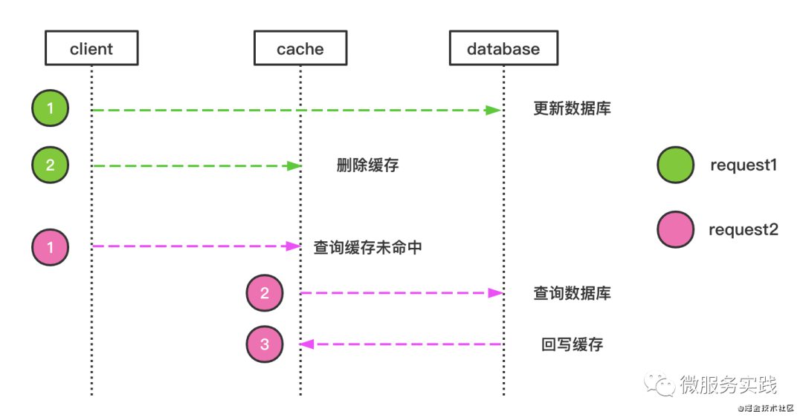
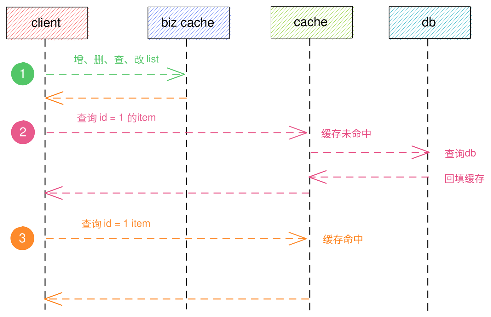
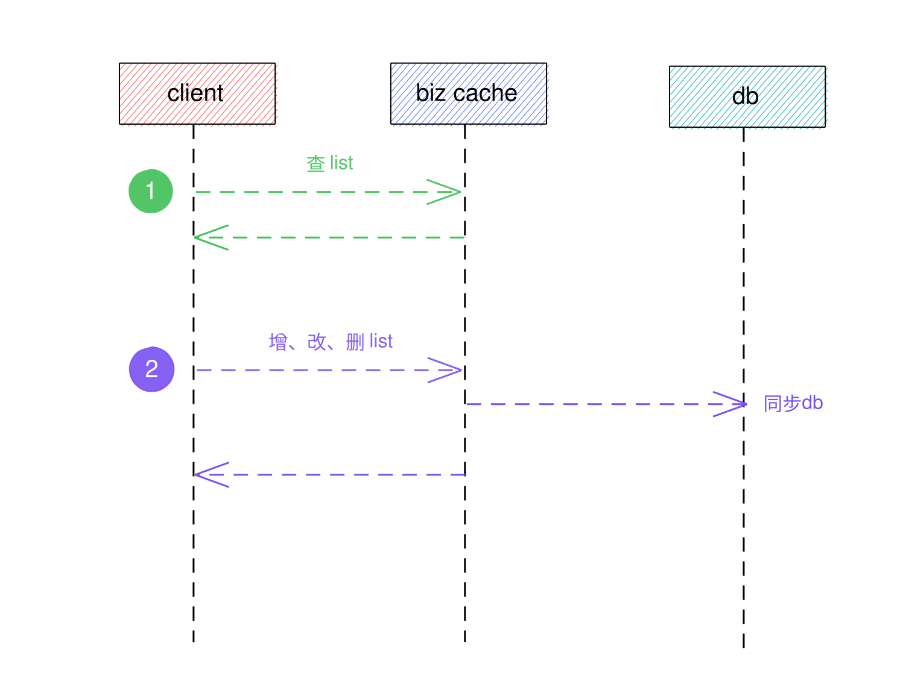

go-zero缓存设计之业务层缓存
在上一篇go-zero缓存设计之持久层缓存介绍了db层缓存，回顾一下，db层缓存主要设计可以总结为：
- 缓存只删除不更新
- 行记录始终只存储一份，即主键对应行记录
- 唯一索引仅缓存主键值，不直接缓存行记录（参考mysql索引思想）
- 防缓存穿透设计，默认一分钟
- 不缓存多行记录
前言
在大型业务系统中，通过对持久层添加缓存，对于大多数单行记录查询，相信缓存能够帮持久层减轻很大的访问压力，但在实际业务中，数据读取不仅仅只是单行记录， 面对大量多行记录的查询，这对持久层也会造成不小的访问压力，除此之外，像秒杀系统、选课系统这种高并发的场景，单纯靠持久层的缓存是不现实的，本节我们来 介绍go-zero实践中的缓存设计——biz缓存。
适用场景举例
- 选课系统
- 内容社交系统
- 秒杀 ...
像这些系统，我们可以在业务层再增加一层缓存来存储系统中的关键信息，如选课系统中学生选课信息，课程剩余名额；内容社交系统中某一段时间之间的内容信息等。
接下来，我们一内容社交系统来进行举例说明。
在内容社交系统中，我们一般是先查询一批内容列表，然后点击某条内容查看详情，
在没有添加biz缓存前，内容信息的查询流程图应该为：

从图以及上一篇文章go-zero缓存设计之持久层缓存中我们可以知道，内容列表的获取是没办法依赖缓存的， 如果我们在业务层添加一层缓存用来存储列表中的关键信息（甚至完整信息），那么多行记录的访问不在是一个问题，这就是biz redis要做的事情。 接下来我们来看一下设计方案，假设内容系统中单行记录包含以下字段
| 字段名称 | 字段类型 | 备注 |
|---|---|---|
| id | string | 内容id |
| title | string | 标题 |
| content | string | 详细内容 |
| createTime | time.Time | 创建时间 |
我们的目标是获取一批内容列表，而尽量避免内容列表走db造成访问压力，首先我们采用redis的sort set数据结构来存储，根需要存储的字段信息量，有两种redis存储方案：
缓存局部信息

对其关键字段信息（如：id等）按照一定规则压缩，并存储，score我们用createTime毫秒值（时间值相等这里不讨论），这种存储方案的好处是节约redis存储空间， 那另一方面，缺点就是需要对列表详细内容进行二次回查（但这次回查是会利用到持久层的行记录缓存的）缓存完整信息

对发布的所有内容按照一定规则压缩后均进行存储，同样score我们还是用createTime毫秒值，这种存储方案的好处是业务的增、删、查、改均走redis，而db层这时候 就可以不用考虑行记录缓存了，持久层仅提供数据备份和恢复使用，从另一方面来看，其缺点也很明显，需要的存储空间、配置要求更高，费用也会随之增大。
示例代码：
type Content struct {
Id string `json:"id"`
Title string `json:"title"`
Content string `json:"content"`
CreateTime time.Time `json:"create_time"`
}
const bizContentCacheKey = `biz#content#cache`
// AddContent 提供内容存储
func AddContent(r redis.Redis, c *Content) error {
v := compress(c)
_, err := r.Zadd(bizContentCacheKey, c.CreateTime.UnixNano()/1e6, v)
return err
}
// DelContent 提供内容删除
func DelContent(r redis.Redis, c *Content) error {
v := compress(c)
_, err := r.Zrem(bizContentCacheKey, v)
return err
}
// 内容压缩
func compress(c *Content) string {
// todo: do it yourself
var ret string
return ret
}
// 内容解压
func unCompress(v string) *Content {
// todo: do it yourself
var ret Content
return &ret
}
// ListByRangeTime提供根据时间段进行数据查询
func ListByRangeTime(r redis.Redis, start, end time.Time) ([]*Content, error) {
kvs, err := r.ZrangebyscoreWithScores(bizContentCacheKey, start.UnixNano()/1e6, end.UnixNano()/1e6)
if err != nil {
return nil, err
}
var list []*Content
for _, kv := range kvs {
data:=unCompress(kv.Key)
list = append(list, data)
}
return list, nil
}
在以上例子中，redis是没有设置过期时间的，我们将增、删、改、查操作均同步到redis，我们认为内容社交系统的列表访问请求是比较高的情况下才做这样的方案设计， 除此之外，还有一些数据访问，没有想内容设计系统这么频繁的访问， 可能是某一时间段内访问量突如其来的增加，之后可能很长一段时间才会再访问一次，以此间隔， 或者说不会再访问了，面对这种场景，如果我又该如何考虑缓存的设计呢？在go-zero内容实践中，有两种方案可以解决这种问题：
- 增加内存缓存：通过内存缓存来存储当前可能突发访问量比较大的数据，常用的存储方案采用map数据结构来存储，map数据存储实现比较简单，但缓存过期处理则需要增加 定时器来出来，另一宗方案是通过go-zero库中的 Cache ，其是专门 用于内存管理.
- 采用biz redis,并设置合理的过期时间
总结
以上两个场景可以包含大部分的多行记录缓存，对于多行记录查询量不大的场景，暂时没必要直接把biz redis放进去，可以先尝试让db来承担，开发人员可以根据持久层监控及服务 监控来衡量时候需要引入biz。